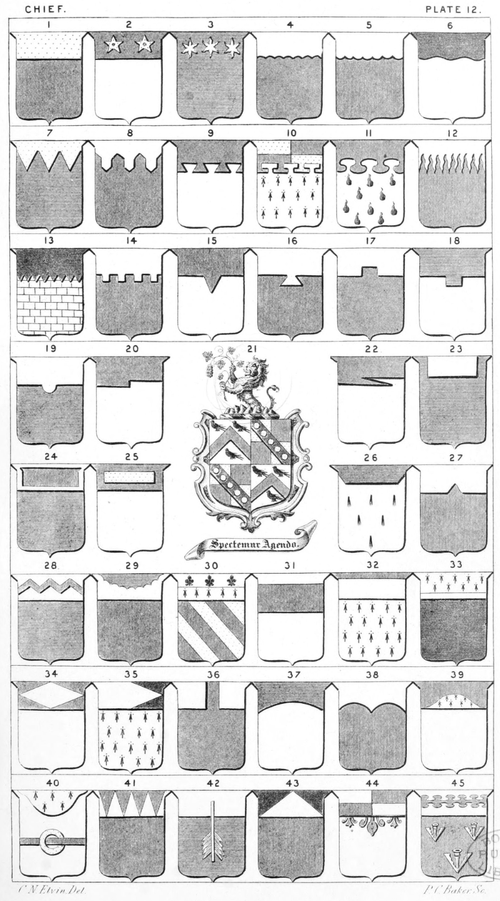

Plate 12.

Plate 12.
- A Chief. Gu. a Chief or.
- Ar. on a Chief vert, two mullets
- pierced or.
Az. in Chief three etoiles ar.
- Chief Engrailed
- Invecked, or Invected
- Chief Wavy, Wavée, or Undée
- Chief Dancettée
- Chief Urdee or Champaine, also termed
embattled rebated at its corners
- Chief Dove-tailed
- Chief Quarterly, Potent counter-potent
- Chief Nebulée. Ar. Gutte-de-poix, a
chief nebulee gu.
- Chief Rayonee, Rayed, or Raise
Indented. Ar. masoned sa., a
chief indented of the second
- Chief Crenellee
- Chief of one Indent
- Chief with one dovetail, also termed a Chief Chief with one label or Lambeaux, or pattee
- Chief Escartellee, also blazoned one Chief embattlement in a chief
- Chief with one embattlement
- Chief Nowed
- Chief Angled, or Rect-angled
- Arms Quarterly, 1st and 4th ar. a
- chev. gu. betw. three martlets
sa. Elvin 2nd and 3rd. Quarterly or and gu. on a bend sa.
five bezants. Stebbing. Crest
Blazoned at plate 8. fig. 21
- A Chief Beveled
- Chief Couped
- Chief Bordered or rempli, also termed Chief Cousu-Chief
- charged with a Bar humettée
- A Chief Couped bevelwise. Ar. six
muschetors, three, two and one
and a Chief couped bevelwise az.
- Chief with one indent in chief, or a Chief indent
- On a Chief a Bar Dancettee, also
termed a vivre
- Chief Couvert
- Chief Per-Fess. Bendy of six ar. and
gu. A chief per-fesse ar. and
erm. in chief three fleur-de-lis
sa.
- Chief Lowered or Removed
- Chief Surmounted, or Surmounte
- Chief charged with a Fillet. Sa. a Chief
erm. charged with a fillet in the
neither part ar. It is also blazoned
a Chief supported or surmounted,
and a Chief wdth a fillet in the
lower part, also Soustenu, or
Souteunee
- Chief Vestu, or Revestu
- Chief Vestu sinister
- Chief Inclave
- Chief Arched, convex, or flecked
- Chief Double Arched
- Chief Charged with a Chapournet, or
Shapournett
- Chief Chapournated, or a Chapournated-chief. And a Barrulet enfiled
with an annulet
- Chief Point in Point dented
- Chief Pierced by an arrow
- Chief Enmancheé, or Chappe. Gu. a
chief ar. chappe sa.
- Chief Quarterly-Flory counter Flory
- Chief Charged with a Bar Nebulee. Gu.
three Pheons ar. on a Chief of
the last a bar nebulee az.
For Chief Ajouré, and Chausse. See P. 22, fig. 9 and 8.